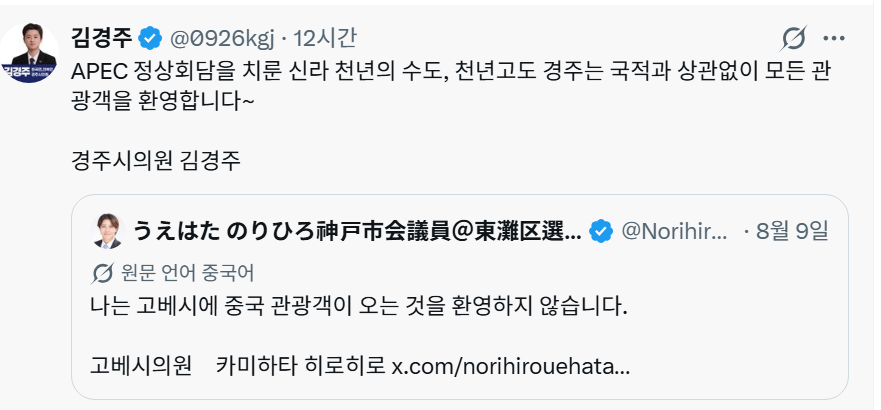

Wesley
@Wesley10032
@Tsiberia 中日两国历史上都被排外主义所害，希望日本右翼能知道这一点。

파란달(Bluemoon)
@Tsiberia
韓国と日本の市議会議員による外国人観光客に対する姿勢。その水準の違いが感じられる。
韓国：APEC首脳会議が開催された、新羅の千年の都、千年古都・慶州は、国籍を問わずすべての観光客を歓迎します。
慶州市議会議員 キム・ギョンジュ https://t.co/nKahsjZ34e